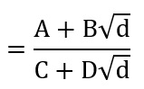

Teoremas
[1.] Teorema: si x =
entonces x es un número irracional cuadrático
Demostración. Sea y =
"y" representa un número iraccional, y por ende:

Donde P'm/q'm y P'm-1/q'm-1 son las dos ultimas convergentes de
Es así como podemos determinar de la ecuación anterior:
Ahora que "y" es un número irracional cuadrático. Suponemos que:
Con r y s números racionales,s ≠ 0 y d un entero positivo que no es un cuadrado perfecto. Si Pn/qn y Pn-1/qn-1 son las últimas convergentes de la fracción:
Tenemos:

Donde A, B. C y D son números racionales. Por lo tanto:
Donde r' y s' son números racionales. Y es así como queda demostrado el teorema [1.] en el cual se expresa que x es un irracional cuadrático, como se quería probar.